PUDRUS.XYZ
Herramientas visuales, juegos, noticias y experimentos. Todo corre en tu navegador.
Visual Processing Suite
Each tool runs entirely in your browser. No uploads, no installs.
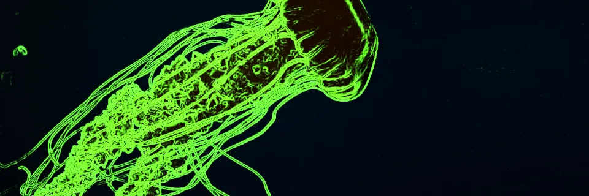
New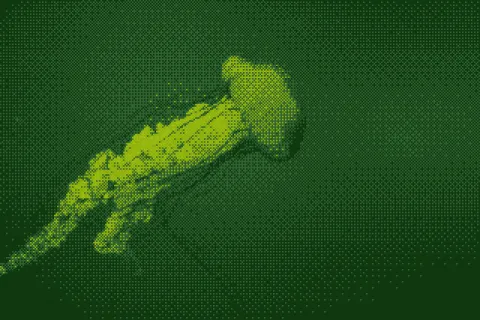
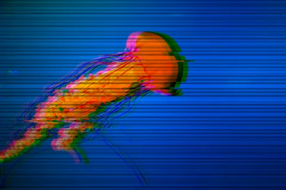
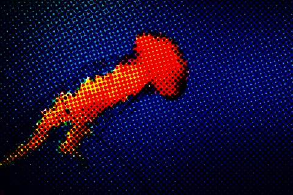
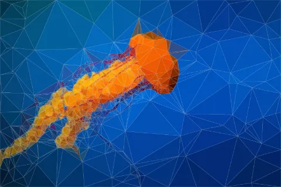
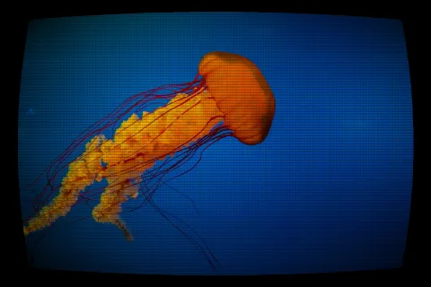
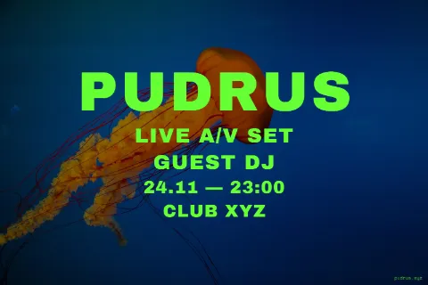
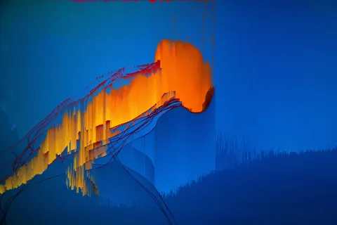
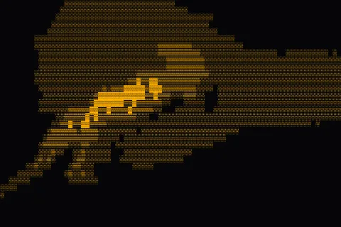
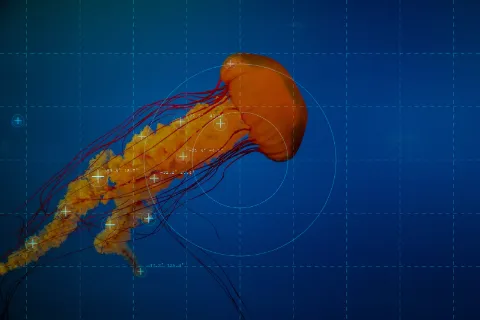
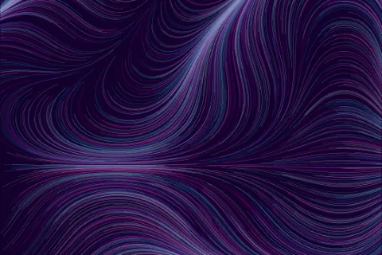
DRUS · train your brain
Quick games of logic, memory, attention and creativity. No sign-up: your records stay in your browser.
NoticIAs
Tecnología, videojuegos, ciencia y arte; y lo que pasa en el mundo y cómo pega acá. Títulos claros, resúmenes propios, sin publicidad.
Una IA agrupa lo que cuenta cada medio, escribe un título que dice qué pasó, explica cómo pega acá y verifica cada dato contra las fuentes antes de publicarlo.
Leer las noticiasLabs · experimentos
Lo que uso en mis shows de visuales y música, abierto para que lo pruebes. Son experimentos: cambian seguido y están pensados para una compu.
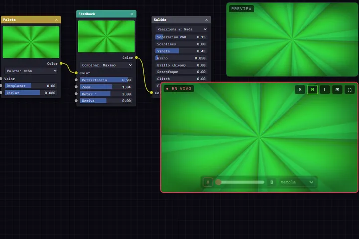
Visuales por nodos, al estilo Blender: conectás cajas, armás efectos y los tocás en vivo, con el celular como control. En mis shows lo uso como app de escritorio, con salida a Resolume y luces.
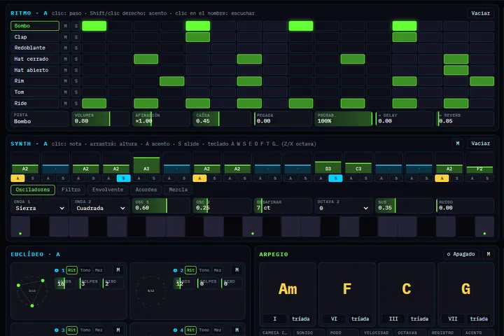
Caja de ritmos, sintetizador, arpegios y anillos euclidianos para techno y psytrance, con dos decks, efectos de pista y grabación del set.
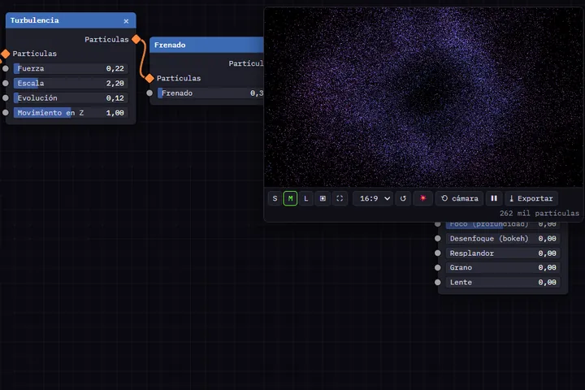
Cientos de miles de partículas en la placa de video, armadas con nodos: emisores, remolinos, turbulencia. Lo que armás se usa en NODRUS.
⚠ Experimental · para compu con teclado y mouse. En el celular se abren, pero no se usan bien.
Made with PUDRUS
Images the community created with these tools.
Trabajo entre el arte, la tecnología y la escena
Durante más de una década desarrollé mi trabajo atravesando distintas disciplinas: diseño gráfico, artes visuales, informática, música y producción audiovisual. Ese recorrido me permitió construir una forma de trabajo donde la creatividad y la técnica no funcionan como áreas separadas, sino como partes de un mismo proceso.
Me desempeño como artista visual, diseñador gráfico, director de cámaras (CCTV), técnico audiovisual, técnico escénico y VJ, además de desarrollar proyectos musicales y colaborar en la producción de eventos en vivo. Cada una de estas experiencias aporta una mirada diferente sobre la imagen, el sonido, el espacio y la relación entre las personas y la tecnología.
Trabajo tanto en la creación de identidades visuales, ilustraciones, animaciones, motion graphics, diseño 3D y contenidos digitales, como en el desarrollo y operación de sistemas audiovisuales para espectáculos, transmisiones en vivo e instalaciones. En los últimos años incorporé herramientas de inteligencia artificial a mi flujo de trabajo como un recurso creativo que complementa, pero nunca reemplaza, los procesos de diseño y producción.
Actualmente me encuentro abierto a colaborar en proyectos, integrarme a equipos de trabajo y desarrollar propuestas tanto presenciales como remotas.
PUDRUS.XYZ lo hace Fercat, músico, artista visual y VJ. Está hecho con JavaScript puro y todo corre en tu navegador: sin cuentas, sin publicidad y sin subir tus imágenes a ningún lado. Mirá mi trabajo.
- ◈ Privado: lo tuyo queda en tu dispositivo
- ⚡ Nada que instalar
- ✦ Gratis y sin cuentas